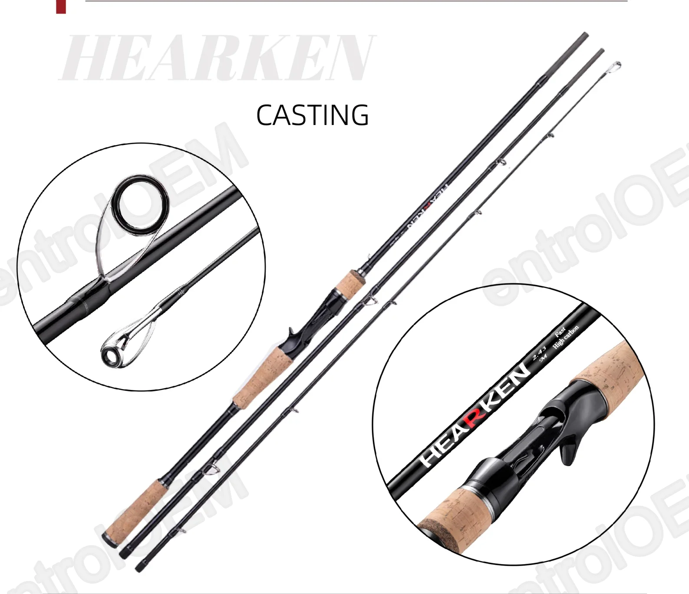

Fishing Line Numbers Explained: PE, Monofilament and Fluorocarbon

Line is the only direct connection between you and the fish, yet it is often chosen last. Understanding what the number on a spool actually means will help you match the line to the rod, the reel and the fish you are after.
The number is a diameter or a strength class, not a catch weight
Line markings describe either diameter or a nominal breaking strength, depending on the system in use. A PE number describes a braided line size class; a pound test describes a nominal breaking strain. Neither tells you what size fish you can land. Fish weight, fighting leverage, drag setting, knots and the rod all affect the outcome. Choose line for the method and the load, and set the drag below the line rating.
Braid: thin, strong and sensitive
Braided line gives the most strength for a given diameter and very low stretch, which translates into sensitivity and long casting. It is the default choice for lure fishing and for any situation where feeling the bottom or a strike matters. Because it is thin and visible, it is commonly paired with a monofilament or fluorocarbon leader. Braid also needs careful knot choice and a reel spool that can handle it without digging.
Monofilament: forgiving and easy to use
Monofilament stretches, which absorbs sudden runs and makes it forgiving with light hook sets and knots. It is inexpensive, easy to handle and widely available, which makes it a good choice for beginners and general freshwater use. The trade-offs are greater diameter for the same strength, more stretch-related loss of sensitivity and faster degradation in sunlight over time.
Fluorocarbon: dense and subtle underwater
Fluorocarbon is denser than water and less visible underwater, so it is often used as a leader or as a main line in clear-water conditions. It sinks faster than mono and is more abrasion-resistant around rocks and structure. It is stiffer to handle and more expensive, and different products vary more in quality, so buy from a supplier who can state the actual diameter and breaking strain.
Match the line to the rod rating
Every rod carries a line or lure rating that describes the load range it was designed for. Using line far heavier than that rating changes the bend profile and reduces the rod's ability to protect light tackle; using line that is too light leaves you under-gunned for the lure or the fish. Stay within the range printed on the rod and choose within it according to the conditions.
Match the line to the reel spool
Reel capacity is quoted as a length of a specific line diameter or strength. If you change line type, the amount the spool holds changes. Check that the reel carries enough of your chosen line plus backing for the water you fish. A badly filled spool casts poorly and can cause tangles, so match the diameter to the spool rather than assuming any line will fit.
A practical starting point by method
For general lure fishing, a fine braid with a leader is a versatile default. For rock fishing with light rigs, use a fine main line with a leader matched to the species. For carp, use a line chosen for the distance and cover, with a rig appropriate to the venue. For heavy boat work, follow the reel capacity and the rod rating rather than chasing the thinnest possible line. When in doubt, ask the supplier to confirm diameter and breaking strain together.
Turn the research into a specification
If you are building a range under your own brand, we can help turn these choices into a repeatable rod and reel specification. Send us your target species, water type and quantities and we will come back with options.